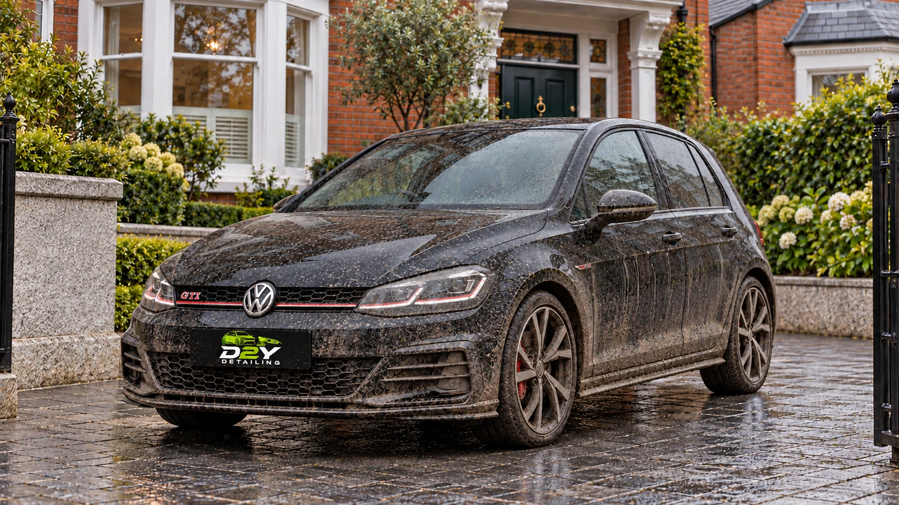
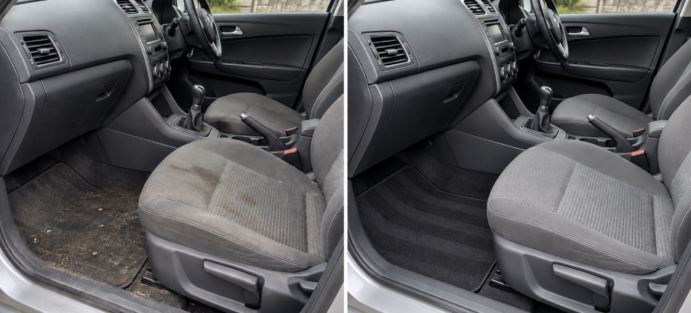
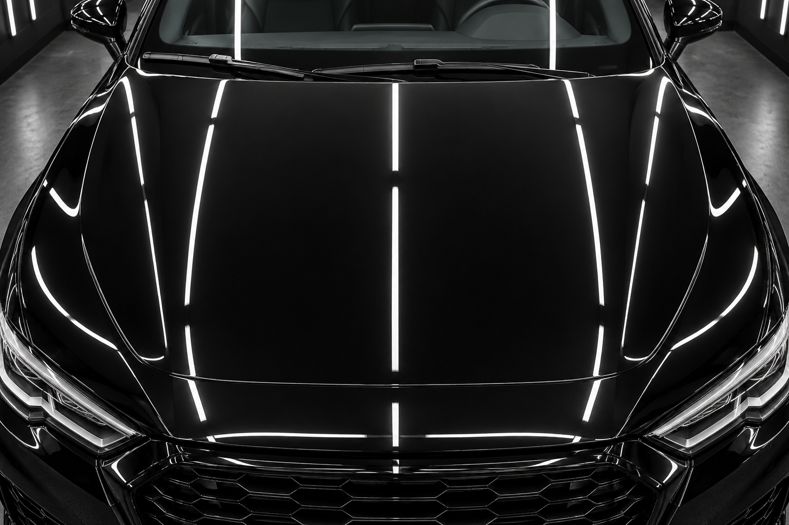

Drag the green foam gun to the right. Follow with the blue water gun. Move either one back to try again.

Move the nozzle over the interior to clean it.
01 / Polish the paint

Move the polisher over the hood to reveal the shine.
Detailing is all about transformation: dirty to clean, dull to fresh, ordinary to sharp.